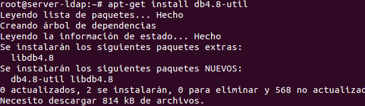
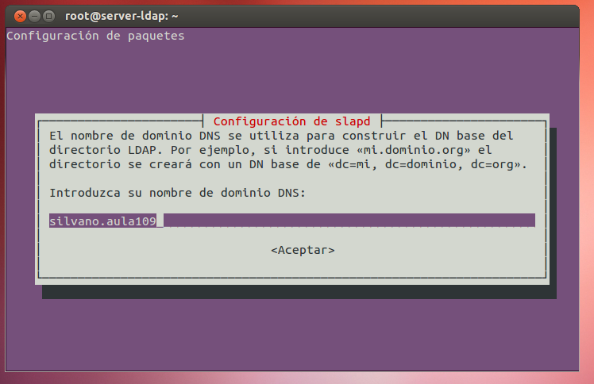
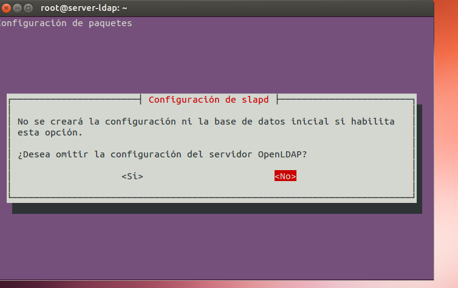
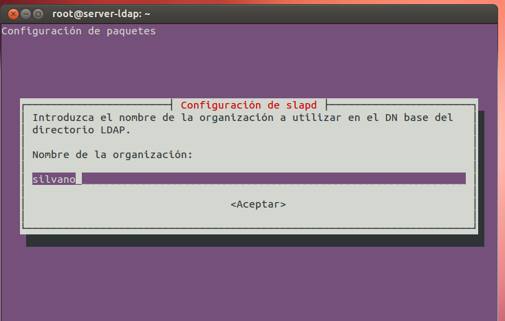
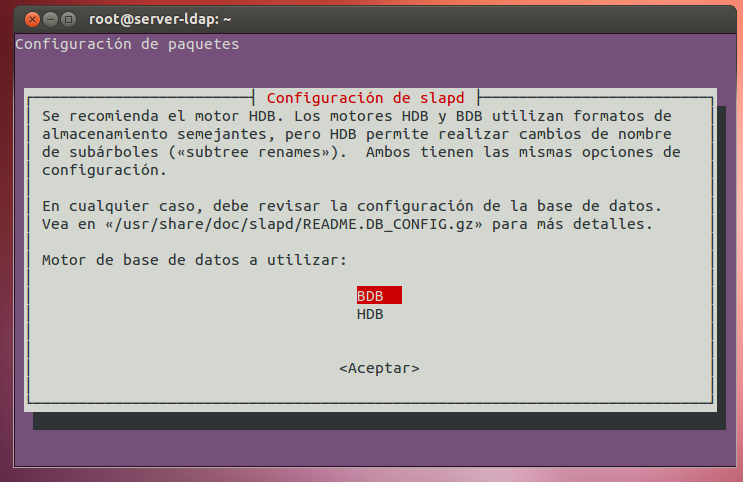
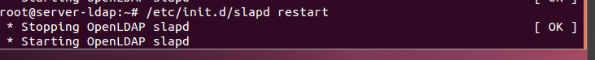
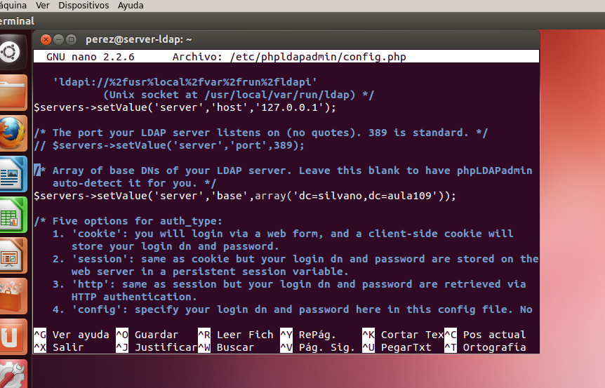
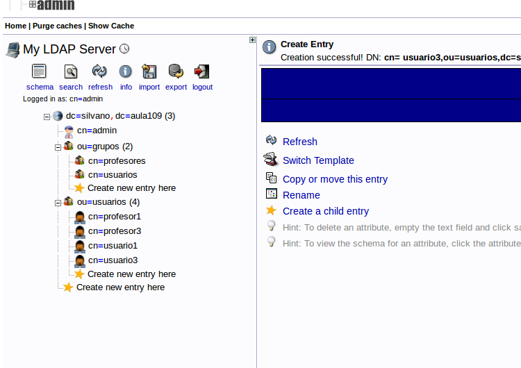
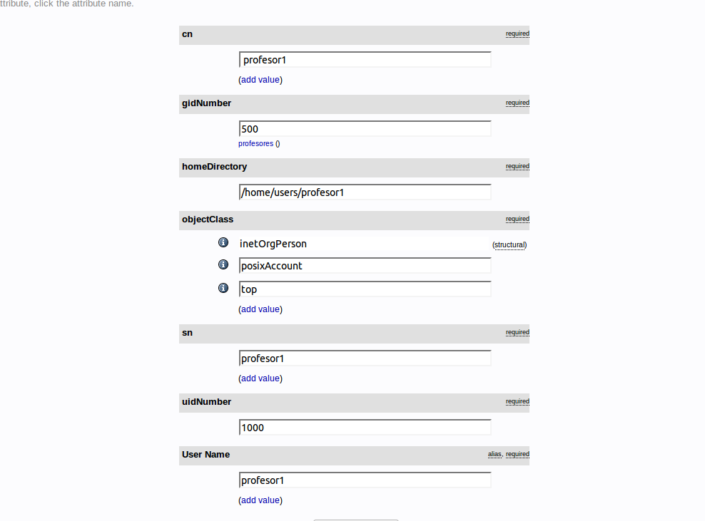
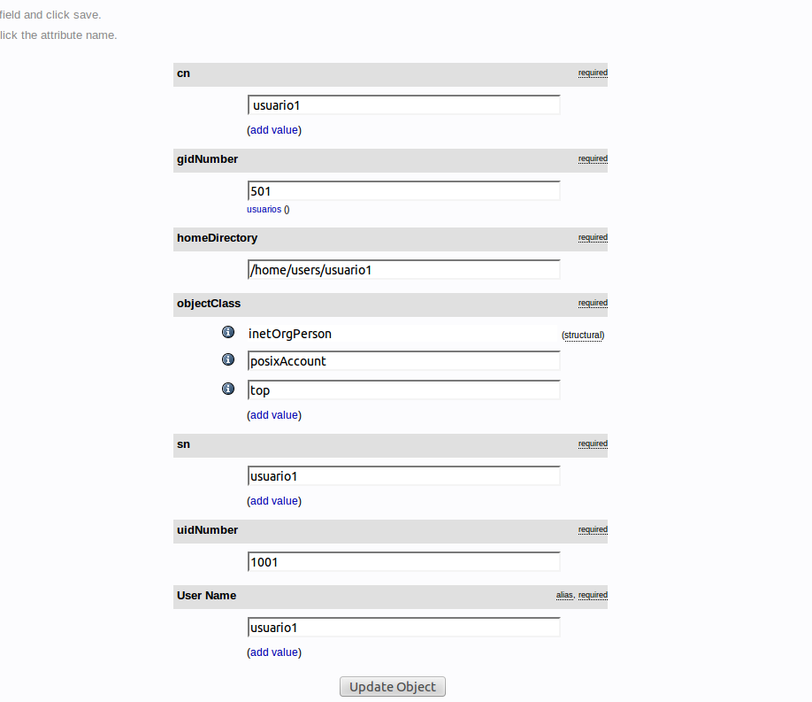

- Módulo: Administración de Sistemas Operativos
- Título del trabajo Servidor Ldap
- Componentes del grupo: Silvano Pérez Yanes
- Curso Académico: 2014/2015
- Fecha de entrega: 31 de Enero de 2014
En esta actividad vamos a instalar un servidor ldap en una máquina vitual ubuntu, en la configuración del servidor ldap ponemos nuestro nombre de dominio, además de poner el usuario administrador.
     Antes de iniciar el phpldapadmin, vamos a fichero de configuración y agregamos el nombre de dominio para que no salga errores a loguearte. Una vez loguado, procedemos a la creación de las unidades organizativas, además de los grupos y usuarios de la actividad.
   